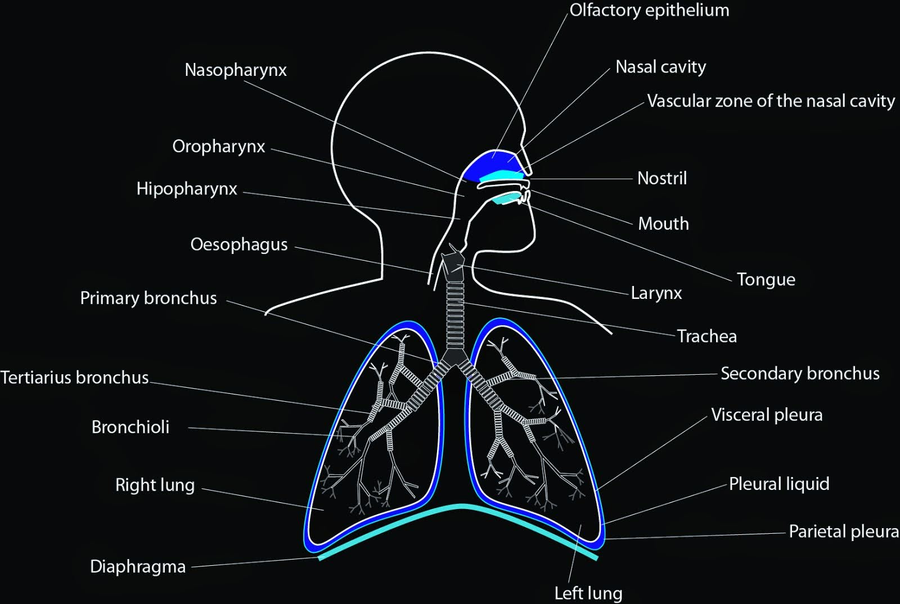

Overview & Purpose
- Respiration: The overall process involving gas exchange between an organism and its environment, and cellular respiration within cells.
- Primary Function: To supply body tissues with oxygen (O2) needed for cellular respiration and to remove the waste product, carbon dioxide (CO2).
- Equation: C6H12O6 + 6O2 → 6CO2 + 6H2O + ATP
- Processes:
- Pulmonary Ventilation: Breathing (moving air in and out of lungs).
- External Respiration: Gas exchange between alveoli (lungs) and blood.
- Transport of Gases: Movement of O2 and CO2 in the blood.
- Internal Respiration: Gas exchange between blood and body tissues/cells.
The Respiratory Tract

- (a) Nasal Cavity (Mouth):
- Air enters. Hairs filter large particles.
- Lined with mucous membrane: Warms, moistens, and traps finer particles/pathogens. Rich blood supply aids warming.
- (b) Pharynx (Throat):
- Common passage for air (to larynx) and food (to esophagus).
- Larynx (Voice Box):
- Connects pharynx to trachea. Made of cartilage.
- Contains vocal cords for sound production.
- Epiglottis covers larynx opening during swallowing to prevent food entry.
- Trachea (Windpipe):
- Tube located anterior to the esophagus.
- Supported by C-shaped rings of cartilage which prevent collapse.
- Lined with ciliated epithelium and goblet cells (produce mucus). The mucociliary escalator traps debris and moves it up towards the pharynx to be swallowed or expelled.
- Bronchi & Bronchioles:
- Trachea divides into two primary bronchi (left and right), one entering each lung. Bronchi also have cartilage rings and ciliated lining.
- Primary bronchi branch repeatedly into smaller secondary bronchi, tertiary bronchi, and finally tiny bronchioles.
- Bronchioles have less cartilage and more smooth muscle (allowing diameter regulation). They lead to the alveoli.
- Alveoli:
- Tiny (~0.2 mm diameter), thin-walled air sacs clustered at the ends of bronchioles (like grapes). Approx. 300-500 million in human lungs.
- Functional Unit: The site of gas exchange between lungs and blood.
- Structure: Walls are extremely thin (one cell thick). Surrounded by a dense network of capillaries. Surface is moist.
Lungs and Pleural Membranes
- Lungs: Pair of spongy, cone-shaped organs located in the thoracic cavity, protected by the rib cage. Right lung has 3 lobes, left lung has 2 lobes (leaving space for the heart).
- Pleura: Each lung is enclosed by a double-layered membrane called the pleura.
- Visceral Pleura: Covers lung surface.
- Parietal Pleura: Lines the thoracic cavity wall.
- Pleural Fluid: Potential space between the layers containing pleural fluid, which lubricates and reduces friction during breathing, and helps keep lungs inflated due to surface tension.
Mechanism of Breathing (Pulmonary Ventilation)
Breathing involves changes in the volume of the thoracic cavity, driven by muscle contractions, leading to air pressure changes. Air moves from higher pressure to lower pressure.
- Inspiration (Active)
- Diaphragm: Contracts and flattens (moves downwards).
- External Intercostal Muscles: Contract, pulling the rib cage upwards and outwards.
- Result: Volume of thoracic cavity increases → Pressure inside the lungs (intrapulmonary pressure) decreases below atmospheric pressure → Air flows into the lungs.
- Expiration (Exhalation) - Passive Process (usually):
- Diaphragm: Relaxes and returns to its dome shape (moves upwards).
- External Intercostal Muscles: Relax, allowing the rib cage to move downwards and inwards due to gravity and elastic recoil.
- Result: Volume of thoracic cavity decreases → Pressure inside the lungs increases above atmospheric pressure → Air flows out of the lungs.
- Forced Expiration: An active process involving contraction of internal intercostal muscles and abdominal muscles.
Gas Exchange (External Respiration)
- Occurs across the respiratory membrane (alveolar epithelium + capillary endothelium + fused basement membranes).
- Driven by differences in partial pressures (P) of gases. Gases diffuse independently down their pressure gradients.
- Oxygen(O2) Diffusion: PO2 is high in alveolar air (~104 mmHg) and low in pulmonary capillary blood (~40 mmHg) → O2 diffuses from alveoli into blood.
- Carbon Dioxide (CO2) Diffusion:: From blood (PCO2 ~45 mmHg) to alveoli (PCO2 ~40 mmHg).
Factors Ensuring Efficiency:
- Large Surface Area: Combined surface area of all alveoli is huge (~70-100 m2).
- Thin Diffusion Barrier: Respiratory membrane is extremely thin (~0.5 μm).
- High Solubility/Diffusibility: (Though CO2 is more soluble than O2, the PO2 gradient is steeper).
- Rich Blood Supply: Continuous blood flow maintains the partial pressure gradients.
- Moist Surface: Gases must dissolve in fluid to diffuse across membranes.
Transport of Gases in Blood
- Oxygen Transport:
- 98.5% binds reversibly to hemoglobin (Hb) within red blood cells, forming oxyhemoglobin (HbO2). Hb+O2 ⇌ HbO2.
- ~1.5% is dissolved directly in the blood plasma.
- Carbon Dioxide Transport:
- ~70% as bicarbonate ions (HCO3−) in the plasma. CO2 enters RBCs, combines with water (catalyzed by carbonic anhydrase) to form carbonic acid (H2CO3), which dissociates into H+ and HCO3-. The HCO3- then moves into the plasma (chloride shift maintains charge balance).
- CO2 + H2O CarbonicAnhydrase ⇌ H2CO3 ⇌ H+ + HC3-
- ~23% bound to hemoglobin (carbaminohemoglobin, HbCO2).
- ~7% dissolved in blood plasma.
Regulation of Breathing
- Breathing rate and depth are controlled primarily by the respiratory center in the brainstem (medulla oblongata and pons).
- The main stimulus for breathing is the level of CO2 (and related H+ concentration / pH) in the blood and cerebrospinal fluid, detected by chemoreceptors. High CO2 increases breathing rate. O2 levels usually play a secondary role.
Note: Carboxy anhydrase is an enzyme so it reduces the activation energy of the reaction CO2 + H2O ⇌ H2CO3. This means the presence of this enzyme facilitates the reaction to happen faster in both ways. In lungs, since CO2 gets removed, the reaction will proceed in the backward direction to maintain equilibrium, while in the body, CO2 gets added so the reaction proceeds in the forward direction until it attains equilibrium. (Refer to Le Chatelier's Principle for more clarification)
Common Diseases & Disorders
Infectious Respiratory Diseases
These are caused by various pathogens that infect parts of the respiratory tract.
- Common Cold
- Locations: Primarily affects the upper respiratory tract (nose, throat, sinuses).
- Pathogen: Various viruses, most commonly Rhinoviruses, but also Coronaviruses, Adenoviruses, etc.
- Key Points:
- Self-limiting viral infection.
- Symptoms: runny nose, sneezing, sore throat, cough (mild), congestion.
- Spread via respiratory droplets.
- No specific cure, treatment focuses on symptom relief.
- Influenza (Flu)
- Locations: Primarily affects the upper and lower respiratory tracts (nose, throat, bronchi, lungs).
- Pathogen: Influenza viruses (Types A, B, and C).
- Key Points:
- More severe than a cold; can lead to serious complications (e.g., pneumonia).
- Symptoms: sudden onset of fever, body aches, headache, fatigue, dry cough, sore throat, runny nose.
- Highly contagious, spread via respiratory droplets.
- Vaccination is a primary preventive measure.
- Pneumonia
- Locations: Primarily the lungs (alveoli and bronchioles).
- Pathogen: Can be bacterial (e.g., Streptococcus pneumoniae, Mycoplasma pneumoniae), viral (e.g., Influenza virus, RSV), or fungal.
- Key Points:
- Inflammation of the lung parenchyma (air sacs).
- Alveoli fill with fluid or pus, impairing gas exchange.
- Symptoms: cough (often with phlegm), fever, chills, shortness of breath, chest pain.
- Diagnosis often involves chest X-ray.
- Bronchitis (Acute)
- Locations: Primarily the bronchi (large airways).
- Pathogen: Most often viral (e.g., common cold viruses, influenza virus), but can be bacterial.
- Key Points:
- Inflammation of the lining of the bronchial tubes.
- Causes a persistent cough, often with mucus.
- Usually self-limiting; acute form resolves within a few weeks.
- Tuberculosis (TB)
- Locations: Primarily the lungs, but can affect other body parts (kidneys, spine, brain).
- Pathogen: Mycobacterium tuberculosis (a bacterium).
- Key Points:
- Chronic bacterial infection.
- Can be latent (asymptomatic) or active (symptomatic and contagious).
- Symptoms of active TB: chronic cough (sometimes bloody), fever, night sweats, weight loss.
- Requires long-term antibiotic treatment.
Global health concern, especially in developing countries.
- Whooping Cough (Pertussis)
- Locations: Primarily the trachea and bronchi (airways).
- Pathogen: Bordetella pertussis (a bacterium).
- Key Points:
- Highly contagious bacterial infection.
- Characterized by severe, uncontrolled coughing fits, often followed by a "whooping" sound on inspiration.
- Can be very serious in infants.
- Preventable by vaccination (DTaP/Tdap).
II. Non-Infectious Respiratory Diseases
These are chronic conditions, often inflammatory or obstructive, not directly caused by pathogens.
- Asthma
- Locations: Primarily the bronchi and bronchioles (airways).
- Pathogen: No pathogen. It's a chronic inflammatory condition.
- Key Points:
- Chronic inflammation and narrowing of the airways, leading to reversible airflow obstruction.
- Triggers: Allergens (pollen, dust mites), irritants (smoke, pollution), exercise, cold air, stress.
- Symptoms: wheezing, shortness of breath, chest tightness, coughing.
- Managed with bronchodilators (relievers) and corticosteroids (controllers).
- Chronic Obstructive Pulmonary Disease (COPD)
- Locations: Primarily the bronchi, bronchioles, and alveoli (lungs).
- Pathogen: No pathogen. It's a progressive lung disease.
- Key Points:
- A group of progressive lung diseases that block airflow and make breathing difficult (includes chronic bronchitis and emphysema).
- Primary cause: long-term exposure to irritating gases or particulate matter, most commonly cigarette smoke.
- Symptoms: chronic cough, mucus production, shortness of breath, wheezing.
- Irreversible damage to airways and lung tissue.
- Cystic Fibrosis (CF)
- Locations: Primarily affects the lungs, but also the digestive system (pancreas, liver), and sweat glands.
- Pathogen: No pathogen for the underlying disease; it's genetic. However, individuals with CF are highly susceptible to recurrent bacterial lung infections (e.g., Pseudomonas aeruginosa).
- Key Points:
- Genetic disorder caused by a defective gene (CFTR) that controls salt and water movement.
- Leads to the production of abnormally thick, sticky mucus that clogs airways and traps bacteria.
- Causes severe breathing problems, frequent lung infections, and digestive issues.
- Lung Cancer
- Locations: Primarily the lungs (bronchi, bronchioles, alveoli).
- Pathogen: No pathogen for the cancer itself, but certain infections (e.g., HPV, TB) can increase risk.
- Key Points:
- Uncontrolled growth of abnormal cells in the lungs.
- Leading cause: smoking. Also linked to secondhand smoke, radon exposure, air pollution.
- Symptoms often appear late: persistent cough, chest pain, weight loss, shortness of breath.
Written by: Parthipan Kasiban